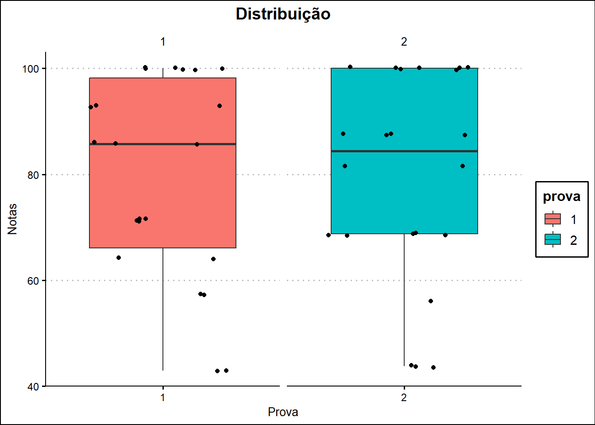
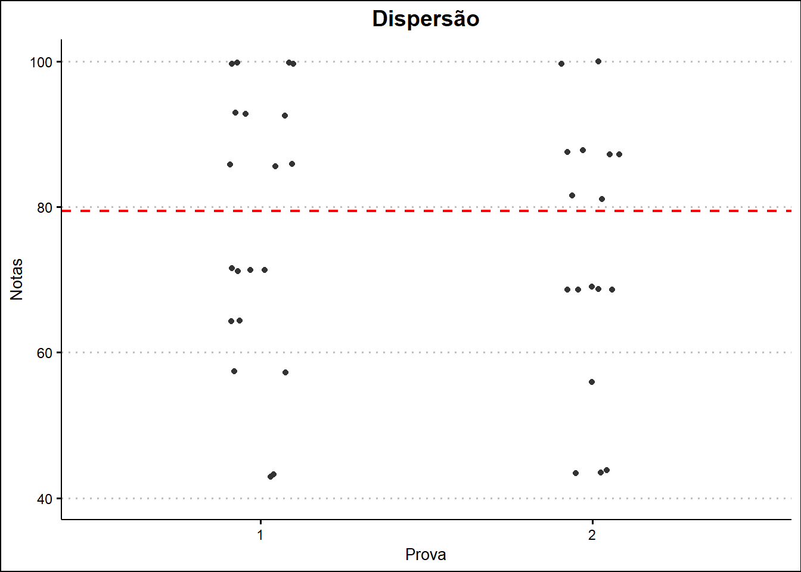

library(tidyverse)
library(gsheet)
library(readxl)
library(ggthemes)Gráficos em ggplot - parte 02
Aula 05 - 03/04/2024
Pacotes
Antes de executar qualquer ação neste script, carregue os pacotes abaixo:
Importação dos dados
Todos os dados usados neste programa devem vir de algum banco de dados. Para carregar conjunto de dados de planilhas na nuvem, utilizaremos o pacote gsheet. O conjunto de dados é importado de acordo com a formatação apresentada na planilha original. Após a importação, é interessante que se realize a sumarização destes dados, a fim de se observar rapidamente valores que serão analizados.
pr <- gsheet2tbl("https://docs.google.com/spreadsheets/d/1bq2N19DcZdtax2fQW9OHSGMR0X2__Z9T/edit#gid=1092065531")
pr$prova <- as.factor(pr$prova)
summary(pr) prova pontos nota
1:22 Min. : 6.00 Min. : 42.90
2:22 1st Qu.:10.00 1st Qu.: 68.75
Median :12.50 Median : 85.70
Mean :11.91 Mean : 79.40
3rd Qu.:14.00 3rd Qu.:100.00
Max. :16.00 Max. :100.00 Análise descritiva
É a fase inicial deste processo de estudo dos dados coletados. Utilizamos métodos de Estatística Descritiva para organizar, resumir e descrever os aspectos importantes de um conjunto de características observadas ou comparar tais características entre dois ou mais conjuntos. Para que seja feita uma análise visual dos dados, é interessante que se calcule algumas métricas para observação. Para facilitar a visualização, basta agrupar o conjunto de acordo com os níveis do fator, e calcular alguns parâmetros, como média, mediana, desvio padrão e o somatório dos dados.
pr |>
group_by(prova) |>
summarise(media = mean(nota),
sd = sd(nota),
median = median(nota),
somatório = sum(nota))# A tibble: 2 × 5
prova media sd median somatório
<fct> <dbl> <dbl> <dbl> <dbl>
1 1 79.5 19.0 85.7 1750
2 2 79.3 19.7 84.4 1744.Através da tabela plotada acima, podemos observar que a média das notas obtidas de ambas as provas foram semelhantes, com valores na casa dos 79 pontos, com desvio padrão de 19 pontos. Já em relação à mediana, que é uma medida mais robusta, observa-se que os alunos tiveram um desempenho melhor na prova 01, representado por valores ligeiramente maiores que na prova 02. Esses valores são corroborados pelo valor encontrado no somatório de todas as notas em cada prova, sinalizando em torno de 7 pontos a mais na prova 01.
Histogramas
Um histograma é uma espécie de gráfico de barras que demonstra uma distribuição de frequências. No histograma, a base de cada uma das barras representa uma classe e a altura representa a quantidade ou frequência absoluta com que o valor de cada classe ocorre.
Para este conjunto de dados, é interessante que se use este modelo de gráfico para analisar a distribuição e frequência com que foram obtidas as notas pelos alunos, de acordo com cada prova.
Para que se tenha uma visualização da média, basta adicionar uma linha, seguindo o comando abaixo:
pr |>
ggplot(aes(nota))+
geom_histogram(bins = 5)+
theme_clean()+
facet_wrap(~prova)+
geom_vline(xintercept = mean(pr$nota), linetype = "dashed", color = "red")O visual de um gráfico pode chamar a atenção do leitor e facilitar o entendimento dos dados ali representados. Portanto, alterar as cores para diferenciar os tratamentos e organizar o texto no gráfico é de suma importância. Essa etapa fica a gosto do autor.
pr |>
ggplot(aes(nota))+
geom_histogram(bins = 5, color = "black", aes(fill = prova))+
facet_wrap(~prova, labeller = as_labeller(c("1" = "Prova 01", "2" = "Prova 02")))+
geom_vline(xintercept = mean(pr$nota), linetype = "dashed", color = "red", sise = 1)+
annotate(geom = "text",
x = 72,
y = 7.5,
label = "Mean")+
labs(title = "Histograma",
x = "Notas",
y = "Frequência")+
theme_clean()+
theme(plot.title = element_text(hjust = 0.5))+
theme(legend.position = "none")Através do histograma acima, podemos observar que a distribuição assume a conformação de assimétrico à direita, em ambas as provas. As maiores frequências foram obtidas com notas de 90 a 100, com maior pico na prova 01. A média neste gráfico é representada pela linha tracejada vermelha.
Para complementação, a seguir foram criados dois histogramas, contendo as frequências das provas 01 e 02 separadamente.
Histograma Prova 01
pr1 <- pr |>
filter(prova == "1") |>
ggplot(aes(nota))+
geom_histogram(bins = 5, color = "black", fill = "cyan")+
facet_wrap(~prova)+
geom_vline(xintercept = mean(pr$nota), linetype = "dashed", size = 0.75, color = "red")+
labs(title = "Histograma 01",
x = "Notas",
y = "Frequência")+
theme(plot.title = element_text(hjust = 0.5))+
theme_clean()+
annotate(geom = "text",
x = 79,
y = 7.5,
label = "Mean")
pr1Histograma Prova 02
pr2 <- pr |>
filter(prova == "2") |>
ggplot(aes(nota))+
geom_histogram(bins = 5, color = "black", fill = "cyan")+
facet_wrap(~prova)+
geom_vline(xintercept = mean(pr$nota), linetype = "dashed", size = 0.75, color = "red")+
labs(title = "Histograma 02",
x = "Notas",
y = "Frequência")+
theme(plot.title = element_text(hjust = 0.5))+
theme_clean()+
annotate(geom = "text",
x = 79,
y = 7.5,
label = "Mean")
pr2BoxPlot
O objetivo da construção desse gráfico é tornar mais nítida a visualização das estatísticas para fazer análises e/ou processamentos em relação a dispersão, assimetria, média, outliers (mínimos e máximos) e mediana. Em um gráfico do tipo boxplot é exibido o resumo dos 5 números, que são: mínimo, primeiro quartil, mediana, terceiro quartil e o máximo.
provas <- pr |>
ggplot(aes(x = prova, y = nota))+
geom_boxplot(aes(fill = prova))+
geom_jitter()+
theme_clean()+
facet_wrap(~prova, scales = "free_x")+
labs(title = "Distribuição",
x = "Prova", y = "Notas")+
theme(plot.title = element_text(hjust = 0.5))
#O comando "free_x" libera o fator "X" e omite tudo aquilo que está vazio no gráfico.
provas
Através do Boxplot é possível observar a distribuição de cada dado isolado, neste caso as notas, de acordo com cada prova realizada. Precebe-se que na prova 01 as notas foram mais dipersas, representadas pelo tamanho da “caixa”. A linha central representa a madiana. Dentro da caixa, e abaixo da mediana está o 2° quartil, acima da linha, o 3° quartil. 50% dos dados estão contidos dentro do boxplot, e os outros 50% fora dele. As linhas indicam os valores máximos acima, e mínimos abaixo.
Errorbar
Barras de erros nos gráficos podem ajudar a ver margens de erros e desvios padrão rapidamente. Elas podem ser exibidas em todos os pontos de dados ou marcadores de dados de uma série de dados como um valor de erro padrão, uma porcentagem ou um desvio padrão.
pr |> group_by(prova) |>
summarise(nota_mean = mean(nota),
nota_sd = sd(nota)) |>
ggplot(aes(factor(prova), nota_mean, color = prova)) +
geom_point(size = 3) +
geom_errorbar(aes(ymin = nota_mean - nota_sd,
ymax = nota_mean + nota_sd),
width = 0.1) +
theme_clean()+
theme(legend.position = "none" ) +
labs(title = "Errobar")+
theme(plot.title = element_text(hjust = 0.5))+
ylim(0,100) +
labs(x = "Prova",
y= "Frequência")Jitter Plot
O Diagrama de Dispersão é usado para analisar a relação entre duas variáveis e em que intensidade a mudança de um dado impacta outro dado. Neste caso, podemos observar uma correlação nula, quando os pontos não seguem uma tendência positiva nem negativa.
dr <- pr |>
ggplot(aes(prova, nota))+
geom_jitter(width = 0.1,
color = "gray20")+
geom_hline(yintercept = mean(pr$nota),
linetype = "dashed",
color = 'red',
size = 0.75)+
theme_clean()+
labs(title = "Dispersão",
x = "Prova",
y = "Notas")+
theme(plot.title = element_text(hjust = 0.5))+
ylim(40,100)
dr
Com o gráfico plotado, podemos observar a linha que indica a média das duas provas, permitindo realizar a contagem de quem ficou acima ou abaixo da mesma.
Autor: Klaus Henrique Ratunde
Tarefa: Análise de dados da sabatina.